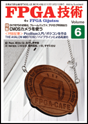
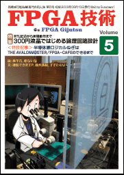
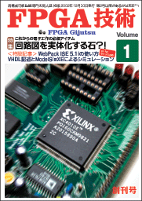
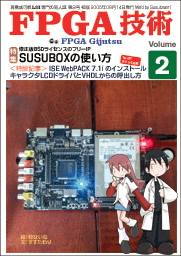
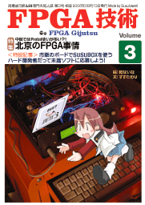
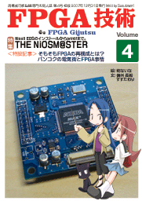
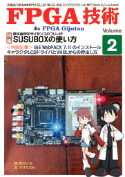
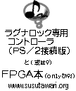
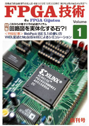

2012年7月31日に秀和システムより「FPGA入門」を出版しました。
(正誤表)

新刊：FPGA技術 Vol.6
販売価格：1,500円
(ページ数と著者の増加に伴い、価格がいつもと変わっています。)
| 目次 |  |
|---|---|
| 第1章 CMOSカメラを使う （marsee） | |
| 第2章 PicoBlaze入門 （いえなが / みずしま甲斐） | |
| 第3章 THE AVALONM@STER 2 （備州長船 / Rayz） | |
| 第4章 ポケコンを作る （一石） | |
| 第5章 パイプラインによる高速化 （すすたわり / 乾ないな ） |
新刊：FPGA技術 Vol.5
販売価格：1,000円
| 目次 |  |
|---|---|
| 第1章 300円液晶ではじめる論理回路設計 （撮影できますP / 美千花） | |
| 1.1 プロローグ〜ろじかる寮のお話 | |
| 1.2 プロジェクト・・・スタート！ | |
| 1.3 秋月300円液晶の使い方 | |
| 1.4 FPGAは何故難しい？ | |
| 1.5 順序回路をマスターせよ | |
| 1.6 グラデーションを映す論理回路 | |
| 1.7 動け！！ FPGA | |
| 1.8 マンデルブロー集合を描いてみよう | |
| 第2章 半導体娘ロジカルねぎは （美千花 / 備州長船） | |
| 第3章 THE AVALONM@STER （備州長船 / 乾ないな） | |
| 3.1 Avalonバスとは？ | |
| 3.2 AvalonMMスレーブを作る | |
| 3.3 Appendix | |
| 第4章 FPGA-CAFEのできるまで （すすたわり / 乾ないな） | |
| イラスト： 美千花， 乾ないな |




新刊：FPGA技術 Vol.4
販売価格：1,000円
| 目次 | |
|---|---|
| 第1章 そもそもFPGAの再構成とは？ （すすたわり） | |
| 1.1 FPGAって何？（再） | |
| 1.2 メモリは演算回路？！ | |
| 第2章 バンコクの電気街とFPGA事情 （すすたわり） | |
| 第3章 THE NiOSM@STER（備州長船） | |
| 3.1 プロローグ | |
| 3.2 やわらかい世界 | |
| 3.3 開発環境のインストール | |
| 3.4 NiosIIマイコンの製作（前編） | |
| 3.5 NiosIIマイコンの製作（後編） | |
| 3.6 エピローグ |
新刊：FPGA技術 Vol.3
販売価格：1,000円
| 目次 | |
|---|---|
| 第1章 北京のFPGA事情 | |
| 1.1 北京の秋葉原：中関村 | |
| 1.2 中国ではProtel使いが多い？！ | |
| 1.3 基板実装工場の見学 | |
| 第2章 開発資金を稼ごう！ (個人でも応募できる開発助成制度) | |
| 2.1 未踏ソフトウェア創造事業 | |
| 2.2 LSIデザインIPアワード | |
| 第3章 市販のボードでSUSUBOXを使う | |
| 付録A 未踏ソフト提案書例 | |
| 付録B IPアワード応募書例 | |
| 今回は使い方というより、現地レポートみたいな内容がメインです。ページ数は96ページです。また、今回も乾ないなさんに絵を描い頂きました。 |
新刊：FPGA技術 Vol.2
販売価格：1,000円
| 目次 |  |
|---|---|
| 第1章 FPGAって何？ | |
| 第2章 インストール | |
| 2.1 ISE WebPACKのダウンロード | |
| 2.2 ISE WebPACKのインストール | |
| 2.3 SUSUBOXの | |
| 2.4 SUSUBOXのインストール | |
| 第3章 VHDLによる開発 | |
| 3.1 VHDLとは | |
| 3.2 ISE WebPACKの起動 | |
| 3.3 ダウンロードケーブル | |
| 3.4 SUSUBOXの利用（キャラクタLCDドライバの例） | |
| 付録 SUSUBOXデータシート | |
|
例によって、表紙が命みたいな？本です。内容は
XILINX → 移転先: https://www.amd.com/ja/products/adaptive-socs-and-fpgas.html Xilinx は 2022 年 AMD に買収。AMD 日本語 FPGA 頁（Xilinx の記載あり） WebPACK ISE 7.1i によるSUSUBOXの導入を解説本（全128ページ）です。 今回はなんと乾ないなさんに絵を描 いてもらっちゃいました。 |
 |
とうとう初参加です。 PS/2ポート用の、らぐな専用コントローラをFPGAにて開発中。 でも完成は危うそう。PS/2ポートはエンコードが大変？！ ということで、FPGA本でもだそうかと思っていたのですが、 こっちが本命になってしまいました。なんか、サークルカットと ずいぶん違ってきたような・・ |
新刊：FPGA技術 創刊号 「回路図を実体化する石？！」
| 目次 |  |
|---|---|
| 第1章 FPGAとは | |
| 1.1 回路図を実体化する石 | |
| 1.2 XILINX WebPack ISE | |
| 1.3 設計から実装までの流れ | |
| 第2章 VHDLによる設計とシミュレーション | |
| 2.1 VHDLによる設計 | |
| 2.2 ModelSim XEによる動作検証 | |
| 第3章 FPGAへの実装 | |
| 3.1 FPGAへの実装例 | |
| 3.2 FPGAへのダウンロード(iMPACT) | |
| 第4章 VHDLの基本構造 | |
|
XILINX → 移転先: https://www.amd.com/ja/products/adaptive-socs-and-fpgas.html Xilinx は 2022 年 AMD に買収。AMD 日本語 FPGA 頁（Xilinx の記載あり） WebPack ISE 5.1i の使い方と、 ModelSim XE によるシミュレーションの方法を解説した、FPGA の入門誌（全44ページ）です。 |